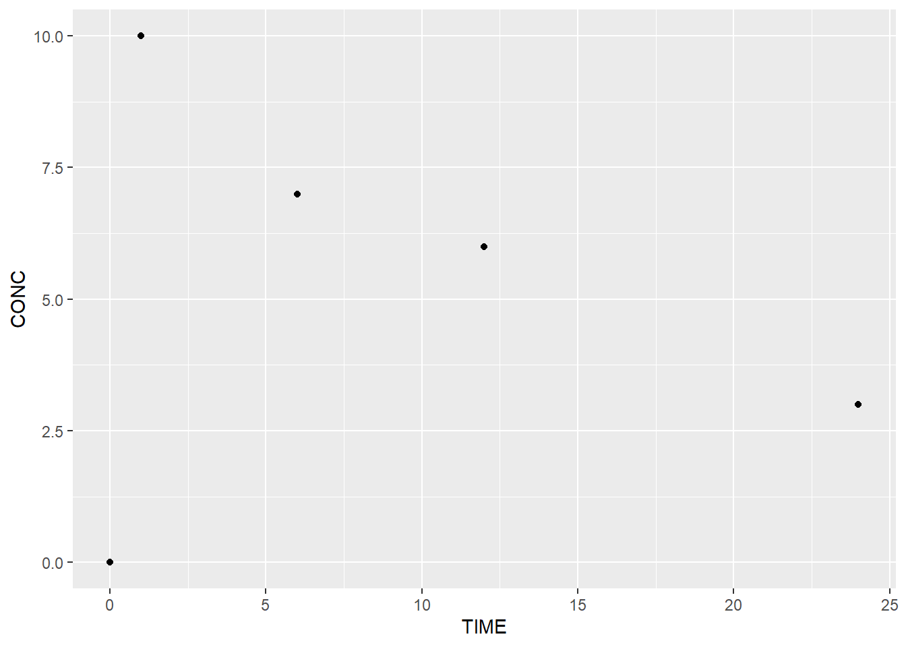
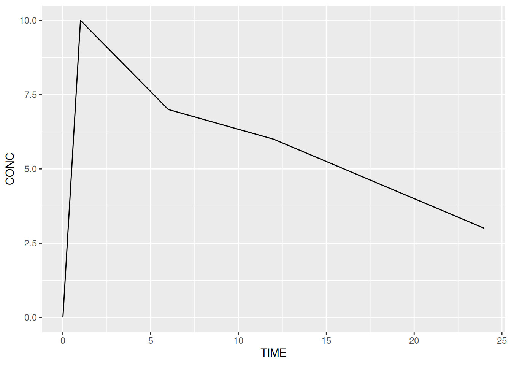
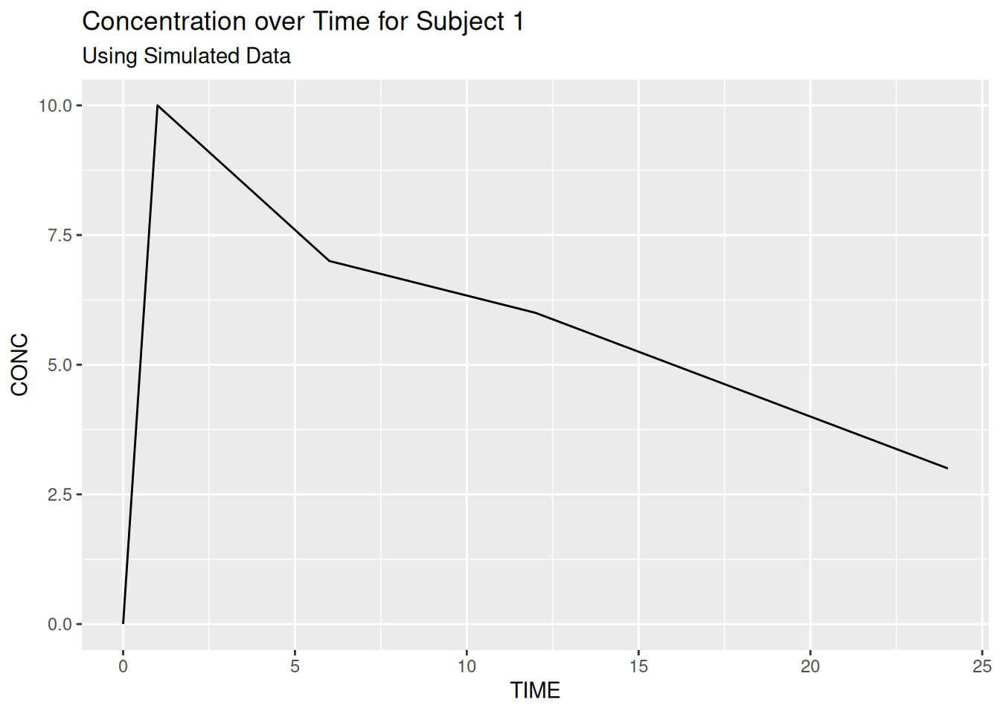
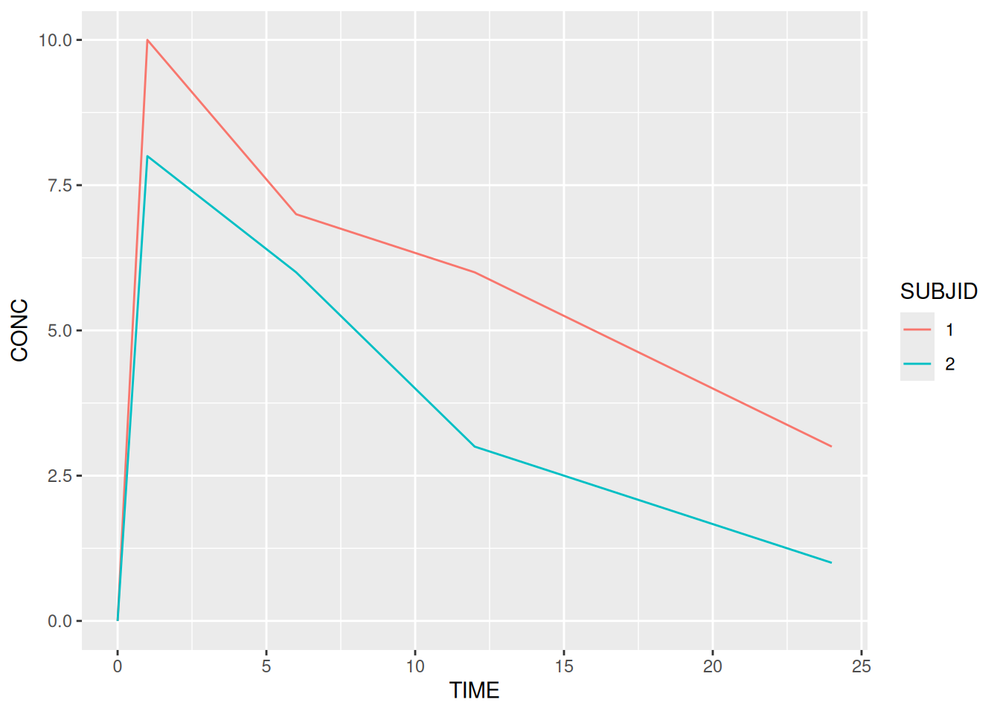
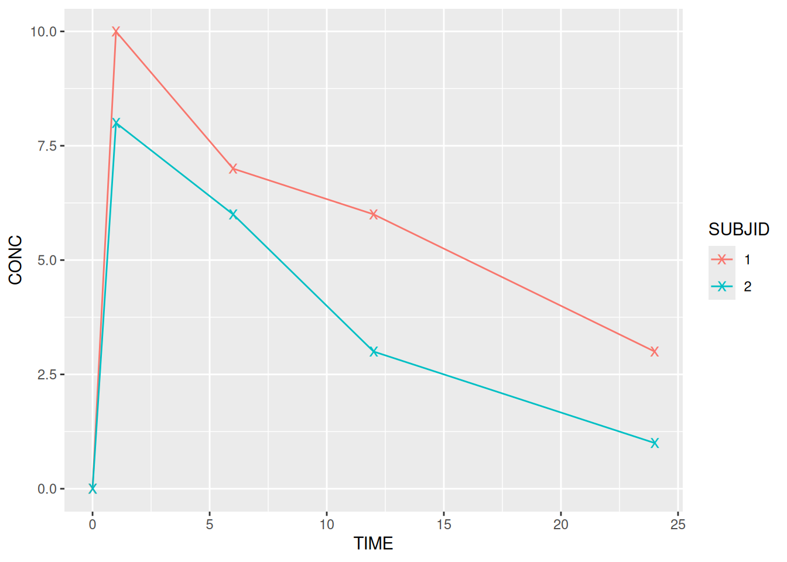

library(ggplot2) # Or `library(tidyverse)` for full tidyverse functionality
ggplot() # Note that the function is named "ggplot" and not "ggplot2"In this course we start by building ggplot2 graphics from scratch using the ggplot function. This will help us understand the general ggplot framework and the concept of layering. Later we will see how the qplot can be used to create “quick” plots for data exploration.
4.1 Calling the ggplot function
For the time being all of the plots that we create will begin with a call to the ggplot function. In the current iteration of ggplot2, calling this function with no arguments simply returns a blank plot.
4.2 Data Mapping: Aesthetics
The ggplot framework is based upon the principle of building up a plot in layers. In order to turn our empty plot into something more interesting we must therefore add layers!
Let’s start with the data. Columns in our data must be mapped to visual elements of the plot. These are known as ‘aesthetics’. Aesthetic elements of the plot include:
- x
- y
- colour / color
- alpha (transparency)
- fill (colour for shaded areas)
- shape
- size
- linetype
- linewidth
To begin with we define these mappings within the ggplot function. Later we will see how we can combine two or more different datasets by defining data mappings within other layers. The arguments are generally self-explanatory but note the use of the aes function in the following example.
ggplot(data = pk,
aes(x = TIME, y = CONC)) Every time we define an aesthetic mapping of a variable (in any layer), the aes function must be used. This is a really important point, and something that a lot of ggplot2 users don’t fully understand so let’s state it again.
- Every time we define an aesthetic mapping of a variable (in any layer), the
aesfunction must be used.
Another important observation from the line above is that the data = part does not need to be wrapped in a call to aes. A good understanding of this key point will save a lot of time and effort debugging code in the future.
4.3 Our First Plot: Adding a ‘geom’
In order to turn our data mappings into something interesting we must add a geometric layer, or ‘geom’. There are several geom’s available and we’ll look at some of these in more detail later. For now we start with a scatter plot. We can turn our data mapping into a scatter plot by adding a geom_point layer. Layers are literally added to the base plot using a +.
# Extract subject 1's data
subj1 <- pk %>% filter(SUBJID == 1)
# Plot subject 1's concentrations over time
ggplot(data = subj1,
aes(x = TIME, y = CONC)) +
geom_point()
Any additional layers are added using the +. Layers can be added on a single line but by convention the + ends the line and the new layer is on the following line. It is not possible to start a line with a +.
There are many different graph types or ‘geoms’ built into ggplot2. Each starts with geom_. Common geoms include:
geom_pointgeom_linegeom_textgeom_boxplotgeom_histogramgeom_bar
# A line plot
ggplot(data = subj1,
aes(x = TIME, y = CONC)) +
geom_line()
We will look at geoms in more detail later on in the course.
4.4 Adding a Title
The ggtitle function can be added as a layer to out plot and allows us to add a main title and (in recent versions of ggplot2) a subtitle.
ggplot(data = subj1,
aes(x = TIME, y = CONC)) +
geom_line() +
ggtitle("Concentration over Time for Subject 1",
subtitle = "Using Simulated Data")
Titles are left-aligned by default but we will look at global theme/styling options later in the course.
4.5 EXERCISE
- Subset (filter) the efficacy data to contain only the three visits with FEV1 data (
VISITNUM %in% c(20,40,60)). Use this to create a scatter plot of FEV1 by visit (VISITNUM).- Add a mapping of treatment (ARM) to ‘colour’ and redraw the plot.
- Change the plot type (
geom) to a line plot and change the colour mapping toUSUBJID- Add an appropriate title to the plot
- Create a scatter plot of the Week 12 ACT Total Score against Baseline ACT Total Score using an appropriate subset of the efficacy data. Ensure that you add an appropriate title to the plot.
- Change the plot type from points to ‘jitter’ (
geom_jitter) to reveal overlaid data points
- Change the plot type from points to ‘jitter’ (
4.6 Saving Graphics
Like lattice graphics (xyplot, histogram, …), but unlike base R graphics (plot, hist), ggplot2 graphics are R objects. In simple terms this means that we can think of them as a recipe / list of instructions that tells R how to draw a graph. We can save our instructions by giving them a name and print the plot at any time (by typing the name). We can also modify/update our list at any time.
# Create a plot called my_plot - nothing is printed at this point!
my_plot <- ggplot(data = pk,
aes(x = TIME, y = CONC, colour = SUBJID)) +
geom_line()
# Print/plot the graph
my_plot # equivalent to `print(my_plot)`
We don’t have to save our graphics with a name but later we will see how useful this can be when publishing graphics to various formats.
4.7 Modifying Graphics
In the previous example we created a line plot of the PK example, which we saved as my_plot. Having saved the list of instructions for our plot we can easily update the list by adding new layers.
my_plot + geom_point(size = 4, shape = 'x')
It is important to note that the previous line simple printed my_plot with x’s at each point. It did not actually modify my_plot. As with other objects in R the object is only updated if we manually overwrite it.
# Note the `my_plot <- ` at the start
my_plot <- my_plot + geom_point(size = 4, shape = 'x')